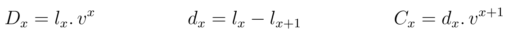
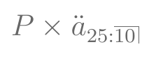

Seguros de Vida
- VPA de diferentes seguros
- Fórmulas de Comutação
- Seguros com Benefícios Crescentes
- Seguros em m partes no ano
Anuidades de Vida
- VPA de diferentes anuidades
- Fórmulas de Comutação
Prêmios
19 de maio de 2023
Aula de Hoje
Seguros e Anuidades de Vida
Seguros de vida ou anuidades de vida são contratos que prometem um ou mais pagamentos de acordo com a ocorrência de eventos relacionados à sobrevivência/mortalidade de indivíduos (life-contingent events).
Por exemplo:
seguro de vida que promete o pagamento de uma indenização caso o seguro morra durante o período definido no contrato;
contrato de anuidade que paga uma quantia no começo (ou final) de cada período, até o final do contrato ou até a morte do segurado, o que ocorrer primeiro;
seguros dotais que pagam uma indenização no menor entre o tempo até a morte do segurado e o final do contrato.
Precificação de Seguros
Etapas para calcular o prêmio de um seguro (preço a ser cobrado pelo contrato):
- Determinar as hipóteses financeiras e demográficas que serão usadas. Isto é, a taxa de juros para descontar os pagamentos futuros, e a tabela de vida com as probabilidades de sobrevivência.
- Calcular o Valor Presente Atuarial dos fluxos de caixa dependentes de sobrevivência/mortalidade do indivíduo, ou seja, o valor esperado dos benefícios prometidos no contrato e as despesas associadas.
- Calcular o prêmio, levando em conta que pode ser pago em uma única parcela (prêmio único) ou em parcelas periódicas.
Notação
Seja:
\(x\) a idade do segurado no início do contrato;
\(n\) a duração do contrato;
\(m\) o período de diferimento, isto é, o período até que a cobertura do contrato se inicie;
\(i\) a taxa de juros;
\(k\) a frequência de pagamentos a cada ano.
Hipóteses assumidas
Para os exemplos dessa aula, vamos considerar:
Tabela de vida Ilustrativa do SOA;
taxa de juros de 6%.
Também vamos assumir que os benefícios são pagos no final de cada período.
Seguros de Vida
Seguros de Vida
O contrato padrão que vamos utilizar será o de seguro de vida temporário por \(n\) anos, que paga $1 no final do ano de morte de \((x)\) se ocorrer antes de \(n\) anos.
VPA:
Seguros de Vida
No caso do seguro de vida inteira, o VPA é obtido quando \(n = \omega\).
Para seguro diferido, basta alterar os limites do somatório para \(k=m\) até \(n+m-1\).
Funções de Comutação
Antes da popularização dos computadores, o cálculo de seguros era feito com tabelas atuariais, tabelas prontas com funções da idade dos segurados.
As funções de comutação são funções de \(l_x\) e da taxa de juros \(i\).
Funções de Comutação


Funções de Comutação - Seguros
- VPA de Seguro de vida inteira:
- Seguro Dotal Puro:
Funções de Comutação - Seguros
- VPA de Seguro de vida diferido:

- VPA de Seguro de vida temporário:
Tabela Atuarial
- O pacote
lifecontingenciescontém funções para criar tabelas atuariais com funções de comutação a partir de uma tabela de vida.
Exercício
- A partir da tabela de vida ilustrativa do SOA:
Construa uma tabela atuarial com juros de 6%;
Exporte essa tabela para um objeto
data.framecom as funções de comutação.
Exercício
## carregar valores de l_x
data("soaLt")
## criar tabela atuarial
soaAct = new("actuarialtable", x=soaLt$x, lx=soaLt$Ix, interest=0.06)
Exercício
## convertendo para data.frame soaAct.df = as(soaAct, "data.frame") head(soaAct.df)
## x lx Dx Nx Cx Mx Rx ## 1 0 10000000 10000000 168358017 47263.585 470300.9 12487975 ## 2 1 9949901 9386699 158358017 44588.288 423037.4 12017674 ## 3 2 9899801 8810788 148971318 42064.422 378449.1 11594637 ## 4 3 9849702 8270000 140160530 39683.417 336384.6 11216188 ## 5 4 9799602 7762203 131890531 37437.186 296701.2 10879803 ## 6 5 9749503 7285396 124128328 6191.668 259264.0 10583102
Exercício
Vamos usar essa tabela de vida para encontrar o valor do prêmio único de um seguro temporário por 3 anos, para um segurado de 36 anos e soma segurada de $100.000.
VPA desse seguro:
Exercício
## Exemplo - Seguro temporário ## 1) usando somatório ## probabilidades prob.morte = -diff(soaAct.df$lx)[soaAct.df$x%in%36:38]/soaAct.df$lx[soaAct.df$x==36] prob.morte
## [1] 0.002140254 0.002274272 0.002420523
## fatores de desconto disc = (1+0.06)^(-(1:3)) disc
## [1] 0.9433962 0.8899964 0.8396193
Exercício
## valor presente atuarial p1 = 100000*sum(disc*prob.morte)
Exercício
- Usando funções de comutação:
## 2) usando funções de comutação p2 = 100000*with(soaAct.df, (Mx[37]-Mx[40])/Dx[37])
Exercício
## 3) usando função seguro temporário p3 = 100000*Axn(actuarialtable = soaAct, x=36, n=3)
cbind(p1,p2,p3)
## p1 p2 p3 ## [1,] 607.5519 607.5519 607.5519
Seguros com benefícios crescentes
Outro tipo de contrato consiste em seguros com benefícios crescentes ou decrescentes, pagos no final do ano de morte.
Por exemplo, considere um seguro temporário por \(n\) anos que paga \(k+1\) se \(x\) completou \(k\) anos desde o início do contrato, ou seja, se \(K_x = k\) para \(k=0,1,\dots,n-1\).
Seguros com benefícios crescentes
- Seguros temporários, crescentes e decrescentes estão relacionados através da equação:
Seguros com benefícios crescentes
## seguros com benefícios crescentes (10+1)*Axn(soaAct, 60, 10)
## [1] 1.504674
IAxn(soaAct, 60, 10) + DAxn(soaAct, 60, 10)
## [1] 1.504674
Seguros em m partes no ano
- Também podemos considerar seguros pagos em m partes no ano. Assim, estamos dividindo o ano em \(m\) subperíodos, e os benefícios serão pagos no final da parte em que ocorrer a morte.
Seguros em m partes no ano
- Vamos verificar numericamente que

(sob suposição de distribuição uniforme de mortes - Seção 4.5 do Dickson)
Seguros em m partes no ano
## relação entre seguros anuais e em m partes Axn(actuarialtable=soaAct,x=30,k=12)
## [1] 0.1052722
0.06/real2Nominal(0.06,12)*Axn(actuarialtable=soaAct,x=30)
## [1] 0.1052722
Anuidades de Vida
Anuidades de Vida
Uma anuidade de vida é uma série de pagamentos feitos no começo (ou final) do ano enquanto o segurado estiver vivo.
VPA de uma anuidade de vida inteira antecipada:
\[\ddot{a}_x = \sum_{k=0}^\infty v^k . {}_{k}p_x \]
- VPA de uma anuidade de vida inteira postecipada:
\[a_x = \sum_{k=1}^\infty v^k . {}_{k}p_x = \ddot{a}_x - 1 = {}_{1|}\ddot{a}_x\]
Funções de Comutação - Anuidades
- VPA de Anuidade de vida inteira antecipada:
- VPA de Anuidade de vida inteira postecipada:
Funções de Comutação - Anuidades
- VPA de Anuidade de vida inteira antecipada e diferida:
- VPA de Anuidade de vida antecipada e temporária:
Exercício
- Vamos encontrar o VPA de uma série de pagamentos de $1, feitos no começo de cada ano, para um segurado de 65 anos vitaliciamente.
## 1) usando somatório sum( (soaAct.df$lx)[soaAct.df$x%in%65:111]/soaAct.df$lx[soaAct.df$x==65]*1.06^(-(0:45)) )
## [1] 9.896928
Exercício
## 2) usando funções de comutação with(soaAct.df, (Nx[66]/Dx[66]))
## [1] 9.896928
## 3) usando função do pacote axn(actuarialtable=soaAct,x=65)
## [1] 9.896928
Exercício
- Refaça os cálculos anteriores para anuidade postecipada.
## Exercício ## anuidade postecipada ##
Exercício
- Encontre o VPA de uma série de pagamentos de $1000 feitos por um segurado entre as idades 25 e 45, no começo de cada ano enquanto estiver vivo.
## Exercício ## VPA anuidade temporária ##
Exercício
- Encontre o VPA de uma série de pagamentos postecipados de $150 feitos mensalmente e vitaliciamente por um segurado de 20 anos, diferidos por 10 anos
## Exercício ## VPA anuidade diferida postecipada e mensal ##
(Para anuidade postecipada: payment="arrears")
Prêmios
Prêmios
Até agora, calculamos o VPA dos benefícios (de contratos de seguros ou anuidades) assumindo um prêmio único.
Nesse caso, o segurado seria cobrado apenas o VPA dos benefícios.
Mas, normalmente, os prêmios são pagos em uma série de pagamentos.
Princípio da Equivalência:
\[VPA(\mbox{benefícios}) = VPA(\mbox{prêmios}) \]
Exercício
Encontre o prêmio de um seguro de vida inteira de $100.000 para um segurado de 25 anos, com prêmios pagos no começo dos próximos 10 anos enquanto estiver vivo.
VPA benefícios:
\[100.000 \times A_{25} \]
- VPA prêmios:

Exercício
## Exercício - Prêmio 1 ##
Exercício
- Calcule o prêmio anual vitalício de um seguro de vida inteira de $100.000 diferido por 20 anos para um segurado de 50 anos.
## Exercício - Prêmio 2 ##
Exercício
Considere uma apólice de seguro de vida inteira de $100.000, diferido por 5 anos, para um segurado de 40 anos.
Os prêmios são pagos durante o período de diferimento.
Caso o segurado morra durante o período de diferimento, o seu beneficiário irá receber os prêmios pagos sem juros.
Calcule o prêmio para esse contrato.